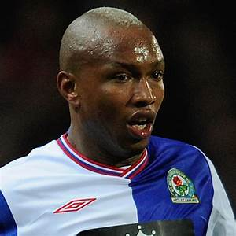
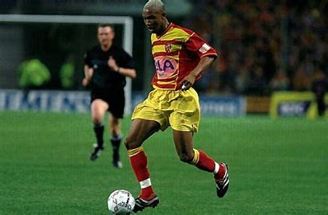

Natif de Dakar,il passe son enfance à Saint-Louis, l'ancienne capitale du Sénégal. El-Hadji commence le football dans les quartiers au poste de gardien de but, poste qu'il quitte quand son équipe est menée pour devenir attaquant, avec Jules Bocandé comme modèle. À 13 ans, il se fait remarquer à Dakar lors de la semaine de la jeunesse1. Il a eu une présélection dans l'équipe nationale des moins de 17 ans gérée à l'époque par Joseph Koto et Mayacine Mar2. Un an plus tard, l'adolescent quitte le Sénégal. Il débarque au RC Lens mais l'expérience échoue après douze jours de stage. N'étant pas jugé au niveau, il intègre ensuite le FC Sochaux. Soutenu par Francis Gillot et François Blaquart, le jeune joueur s'habitue à la vie française et aux exigences du centre de formation. Le Sénégalais montre vite l'étendue de ses qualités balle au pied aux côtés de futurs professionnels comme Meriem, Frau, Pedretti et Daf. Diouf débute avec les moins de 15 ans, grandit avec les moins de 17 ans et mûrit avec l'équipe réserve en CFA. Le 11 novembre 1998, à peine dix-sept ans, il débute en D1 contre le SC Bastia (2-1) puis participe à quinze rencontres durant la saison.
|  | Sadio Mané est un footballeur professionnel sénégalais qui joue comme milieu de terrain pour le club de Premier League Liverpool et l’équipe nationale du Sénégal. Né à Sedhiou, au Sénégal, il a grandi dans une famille pauvre du petit village de Bambali. Il a été inspiré à poursuivre une carrière dans le football après avoir vu l’équipe de son pays bien performer à la Coupe du monde 2002. Il fait ensuite ses débuts pour le club de Français Metz. Finalement, il rejoint le Red Bull Salzbourg, un club de football autrichien. Il les a menés à remporter la Bundesliga autrichienne ainsi que la Coupe d’Autriche. Il a ensuite été signé par Southampton, où il a établi un record l’année suivante en marquant le tour du chapeau le plus rapide. En 2016, il a été transféré à Liverpool pour environ 34 millions d’euros. Cela a fait de lui le joueur africain le plus cher de l’époque. Sadio Mané a également joué pour l’équipe nationale sénégalaise, l’aidant à atteindre les quarts de finale du tournoi olympique de 2012. Il a également joué pour l’équipe nationale à la Coupe d’Afrique des Nations 2015 et 2017, et à la Coupe du Monde de la FIFA 2018. En 2020, Sadio Mane a été inclus dans la liste des 100 Africains les plus influents du magazine New African. |
|  |
Informations du contact
|